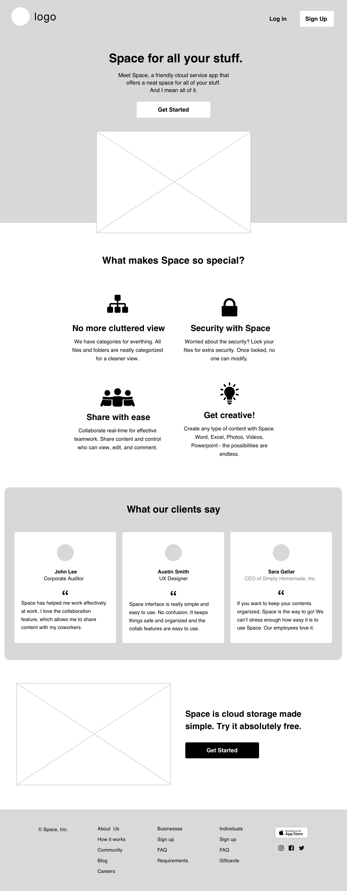
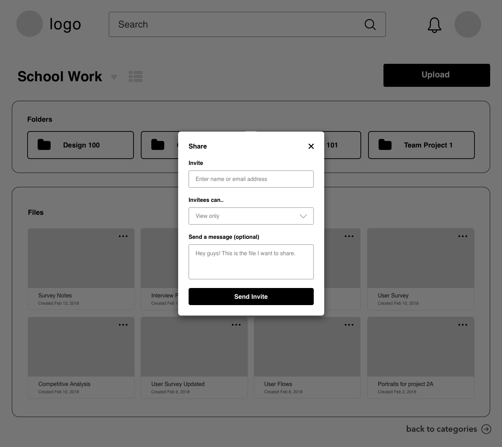
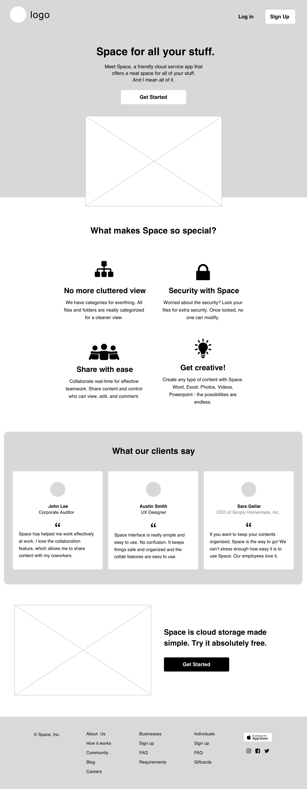
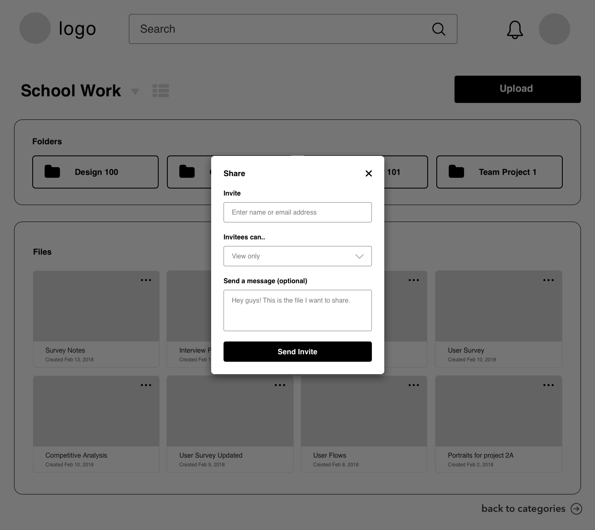

Make Space for Everything.
Meet Space, a friendly cloud service app that
offers a neat space for all of your content.
And we mean all of it.

Problem
The client believes that the cloud storage market is still young and that there is room for another player. I was assigned to design a new cloud storage application that not only exhibits the the basic cloud storage features, but also has special features that allow users to share content with friends, family, and co-workers. The product must be unique from other current applications.
Design Roles
- UX Research
- UX Design
- Visual Design
- Branding & Identity
Deliverables
- User Survey
- Competitive Analysis
- User Personas
- User Stories & Flows
- Wireframes
- Design Mockups
- Usability Tests
Tools
- Google Form
- Draw.io
- Adobe Illustrator
- Sketch
- Usability Hub
- Invision
Solution
Space is a user-friendly cloud storage application for both business and personal users. It allows users to save, create, upload, share, and collaborate in one simple interface. With Space, users have secure access to their files anytime, anywhere, and with any device.
User Survey
When it comes to creating a great product, it’s all about the users. I created a user survey to better understand my potential users and their opinions on cloud storage applications. The goal of the survey was to find out the following:
- In what situations do users use cloud storage apps?
- Which brand is their most favorite and why?
- What features do users like when using cloud storage apps?
- What are users' frustrations with cloud storage apps?
- What additional features do users like to see?
- Demographics info: User's profession, age range, and location
- 90% of respondents use cloud storage apps for work purposes.
- 75% chose Google Drive as their favorite cloud storage app.
- 80% liked the fact that a cloud storage app can integrate with any device.
- 45% noted concerns for security when using cloud storage apps.
- 80% prefer to have collaboration features and find it very useful.
- 85% are in ages between 25 and 34 years and work in tech industry.
Competitive Analysis
To find out how Space can stand out from existing competition, I performed a competitive analysis on the following potential competitors below. What are these three businesses doing right and wrong? I used this knowledge to find out how Space can effectively position itself amongst big powerhouse companies and smaller dedicated companies.
View Competitive Analysis
User Personas
I interviewed two individuals, a personal and business user. They both use cloud storage apps, but for different reasons and in different ways. Interviewing them helped me design a flexible product, one that can appeal to both types of users.
View User Personas
Analyzing Results
I took the time to analyze my results from user survey, competitive analysis, and user personas. This gave me a clearer vision for my project:
Target Audience
“Cloud storage made for everyone.” Space will target both personal and business users. Personal users use cloud storage apps for personal reasons such as sharing photos or working on a school assignment. Business users are working professionals & companies.

Differentiators
- Organizing content by category and folders
- Real-time collaboration
- Security lock feature
- Simple and user-friendly interface
- Wide range of content users can work with
User Stories & User Flows
After analyzing my results from previous steps, I moved forward with creating user stories and user flows. I selected 4 user stories to highlight the main features of the application and converted them into user flows to show how the user would interact with the application.
User Flow 1: Onboarding Process
As a new user, I want to sign up so that I can access my user dashboard.
As a returning user, I want to log in so that I can access my user dashboard.

User Flow 2: Organize Content
As a returning user, I want to organize my content so that I have a organized dashboard.

User Flow 3: Upload & Create Content
As a returning user, I want to upload & create content so that content is saved in dashboard.
User Flow 4: Collaborate
As a returning user, I want to share content so that I can collaborate with others.

Wireframes
Once I started placing elements on a wireframe, I began to understand how they interact. I was able to create a clear layout with all the necessary elements included and located things that do not make sense.
View Wireframe Prototype 



Afer testing my wireframes, I received a lot of comments on some elements (search bar, bell icon, call-to-action buttons) being too big. Users also noted difficulty navigating between user dashboard page to category page (school work). They liked that the user dashboard page was simple and didn’t have clutter.
User Testing
The video below is one of the user tests I conducted. I conducted 3 rounds of users tests with 5 individuals: First with wireframes, second with initial design mockups, and third with updated mockups.
High-Fidelity Mockups
Below are some different high-fidelity design mockup versions of Space, paired with comments from user tests and explanations of changes.
Homepage Header: Version One
Homepage Header: Final Version


- “The font used in the main headings looks fun, but maybe not as professional."
- "Main heading of the hero section covers the woman’s eyes in the background picture."
- “Too much space between logo and ‘Log In’ and ’Sign Up’ buttons. Looks awkward."
- “Would like to see the laptop and iphone view slightly bigger”.
Problem
- I changed the main heading fonts to from Nunito to Avenir Next for a more professional and modern vibe.
- In the hero section, I re-arranged the main heading so that it does not cover the woman’s eyes in the background picture.
- In the hero section, I included additional clickable links (About, Features, Pricing, etc.) to remove the unwanted space.
- Enlarged the laptop and iphone view so users can clearly see the preview of the product.
Solution
Homepage 2nd Section: Version One
Homepage 2nd Section: Final Version


- “Under ‘What makes Space so special?’ There is too much unnecessary white space.”
- “Testimonial section - the users’ photos are too small and rounding the corners of the background container doesn't look professional.”
Problem
- Under the ‘What makes Space so special’, I aligned the paragraghs & icons in the same row to avoid unnecessary white space.
- Testimonial section - I shaped the background container so that it covers the entire space and has no rounded corners for a more modern look. I also re-sized the users’ photos.
Solution
Homepage 3rd Section: Version One
Homepage 3rd Section: Final Version


- “Laptop and iphone view is already shown in hero section. It is repetitive. Include a section that highlights special features of the product.”
- “How long does the free membership last? Be specific. I would like to see pricing information of different plans.”
Problem
- I removed the laptop and iphone images and included a view of the category page to showcase the category features of this product.
- I included additional pricing information on the last section before the footer.
Solution
Category Page: Version One
Category Page: Final Version


- “Top section (logo, search bar, bell icon, user picture) appears too large compared to the rest of elements on page.”
- “Are the containers around ‘Quick access’ and ‘Categories’ sections really necessary? Creates unnecessary white space. Avoid creating box within a box.”
- “Plus icon is not aligned with the text ‘Categories’.”
- “Is the ‘Create New Category’ box necessary? It appears repetitive since the plus icon is already provided.”
- “I would like to see some more color.”
- “Is this the home page? category page? I would also like the option to see list view.”
Problem
- I made elements (logo, search bar, bell icon, user picture) smaller so that it looks consistent with rest of the page.
- I removed containers around ‘Quick access’ and ‘Categories’, which removed a lot of unnecessary white space.
- I reduced size of the plus icon and aligned it with the text ‘Categories’.
- I removed the ‘Create New Category’ box as it was a repetitive feature.
- I included more color (light background color & top nav bar).
- I named this page “My Space”, so that users know which page they are currently at. I included a list view icon on top.
Solution
School Work Page: Version 1
School Work Page: Final Version


- “The call-to-action-button ‘Upload’ appears too big. Also, I would change the terminology. ‘Upload’ is mainly used for uploading existing content, not for new content.”
- “I suggest changing the drop down menu under ‘School Work’ to drop down menu of list of other categories.”
- “I suggest including a directory path so that users can easily navigate back to the category page.”
- “I would like to see some more color.”
- "The files are organized by created date. It would be more useful to see files organized by modified date."
- "Font used in Folders appear too big. Also, include the ‘More options’ icon to each folder."
Problem
- I re-sized the call-to-action button as it was too big. Instead of using the term ‘Upload’, which confused users. I used the term ‘Add’. Users can ‘Add’ new and existing content.
- I changed the drop down menu under ’School Work’ to a drop down menu of list of other categories, so that users can easily navigate between different categories.
- I included a directory path My Space > School Work. Users know that they are currently in School Work category and can easily go back to My Space.
- I included more color (background color, top nav bar, folders, and icons).
- Files and folders are organized by last modified date. Font used for folders is re-sized and ‘More options’ icon is included.
Solution
Real-time Collaboration: Version 1
Real-time Collaboration: Final Version


- “Users profile photos appear too big.”
- “How can I navigate back to ‘School Work’ view? Include a directory path.”
- “Microsoft word already has its own commenting features. I suggest making a word document version for Space.”
- “How do you know which line in the text the users’ comment is referring to?”
Problem
- I re-sized the users profile photos as is was too big.
- I included a directory path My Space > School Work > Survey Notes. Users know that they are currently in Survey Notes and can easily go back to School Work or My Space.
- I made a Space version of word document, instead of using Microsoft Word.
- To comment, users can highlight the text and right click to insert comment. Once posted, the comment will show up on the right side next to the text, which will highlighted.
Solution
Branding & Identity
I wanted to leave a positive, friendly, professional, and modern vibe for Space. I also wanted to let the users know that Space is reliable, safe, and user-friendly. Here is what I did for the branding and identity.
View Style GuideLogo Design
Space’s logo includes a simple wordmark and icon. Notice the bold lines of the cube-shaped logo make up the “S” in Space. Nunito is a fun, friendly, and a bold script typeface. All together, the logo embodies characticteristics of a safe, simple, friendly, organized, and modern, cloud space for everyone.
Typography
Pairing Nunito with Avenir Next work perfectly together especially with contrasting sizes. This set of typefaces best respresent the positive and friendly feel of the brand with a more modern and professional vibe.
Color Palette
Space’s color palette is fairly minimal. Navy is ideal for design showing that it is professionaI and reliable. This is used as interactive elements and as background colors. Dark grayish red color work perfectly well together with the navy . This color is ideal for design to attract attention and is used as text colors. Gray and white is used as some icon, text, and background colors.
Final Product
Putting all the branding and user testing to work. Simply Homemade is the next “Uber of Home cooked Meals” that helps users buy and sell home cooked meals with a simple tap on the screen.


Key Learnings
Space was my first design project and it was an incredible learning experience for me. Here are my key takeaways:
- Don’t underestimated the power of the design process. As a UX designer, I should not overlook the initial steps in design process, such as conducting user research and personas, as it sets a clearer vision for my project.
- Branding is not always about the visuals. Good branding inhabits every aspect of the way a company markets their product. It can influence our potential users. I had to consider what kind of message I want to portray to the audience.
- When in doubt, ask the users. There were many instances during the project, where I spent hours figuring out the best designs. Instead of focusing on my own personal preferences, I learned to ask for users' feedback right away. Conducting user tests and preference tests was a vital part of the project.
- Sometimes, less is more. Less is more when less does more. The use of negative space and getting rid of repetitive features led to a simple and user-friendly interface.